Bestiário e Experimentos Biológicos
Selecione um arquivo de incidente para expandir os dados das criaturas catalogadas.
Resident Evil (1996) ▼
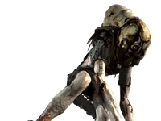
Lisa Trevor
Classificação: Espécime de Teste Humano / Hospedeira Progenitor e NE-Alpha
Descrição Técnica: Filha do arquiteto da mansão, Lisa foi cobaia por décadas. Seu corpo resistiu e absorveu o vírus Progenitor, o parasita Nemesis (NE-Alpha) e diversas mutações, tornando-a completamente imortal e servindo de base direta para a descoberta do G-Vírus.
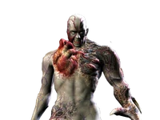
Tirano (Modelo T-002)
Classificação: Protótipo de Arma Biológica Suprema (B.O.W.)
Descrição Técnica: Criado no laboratório subterrâneo da mansão Spencer. Um clone humano geneticamente perfeito altamente compatível com o T-Vírus. Possui um imenso coração exposto no peito para bombear o sangue infectado, garras gigantes e força física devastadora.
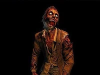
Cabeça Carmesim (Crimson Head)
Classificação: Mutação Secundária por Processo V-ACT
Descrição Técnica: Ativado quando um zumbi comum é incapacitado sem ter seu cérebro destruído. O vírus força uma regeneração celular violenta: a pele ganha coloração vermelha pelo sangue exposto, garras afiadas se desenvolvem e a criatura ganha velocidade extrema e alta agressividade.
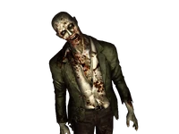
Zumbi
Classificação: Mutação Humana Comum por T-Vírus
Descrição Técnica: O estágio básico de infecção humana. O vírus destrói a maior parte do cérebro, preservando apenas o tronco cerebral e os instintos motores mais básicos. Resulta em necrose de pele progressiva, perda de dor e uma busca incessante por carne fresca para se alimentar.
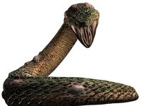
Yawn
Classificação: Réptil Infectado pelo T-Vírus
Descrição Técnica: Uma cobra constritora que escapou dos laboratórios de testes e cresceu a proporções gigantescas sob o efeito do T-Vírus. Recebeu o codinome de "Bocejar" devido à forma como escancara sua mandíbula antes de engolir suas presas com um veneno altamente corrosivo e letal.
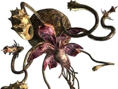
Planta 42
Classificação: Anomalia Botânica Mutacionada
Descrição Técnica: Um espécime botânico localizado na residência dos guardas que acidentalmente absorveu água contaminada com o T-Vírus e produtos químicos. Desenvolveu tentáculos gigantescos capazes de esmagar invasores e bulbos que sugam sangue diretamente de suas vítimas para nutrição.
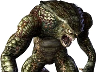
Hunter Alpha
Classificação: Arma Bio-Orgânica de Combate
Descrição Técnica: Um dos maiores sucessos de engenharia genética da Umbrella, combinando DNA humano com óvulos fertilizados de répteis através do T-Vírus. São caçadores incrivelmente ágeis, com pele escamosa resistente e garras longas capazes de decapitar alvos em segundos.
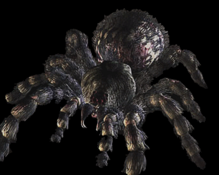
Web Spinner
Classificação: Artrópode Mutacionado por T-Vírus
Descrição Técnica: Tarântulas gigantes que sofreram mutação drástica pelo vírus. Diferente de suas contrapartes normais, elas perdem a habilidade de tecer teias tradicionais no chão, mas compensam com um exoesqueleto massivo, capacidade de andar em tetos e disparar jatos de veneno ácido à distância.
Resident Evil 2 ▼
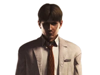
William Birkin (G)
Classificação: Hospedeiro Humano Original do G-Vírus
Descrição Técnica: O criador do G-Vírus injetou a substância em si mesmo em um ato de desespero. O vírus causa mutações biológicas drásticas e instáveis, gerando um imenso globo ocular no ombro, crescimento de novos membros e evolução constante sempre que o hospedeiro sofre danos massivos.
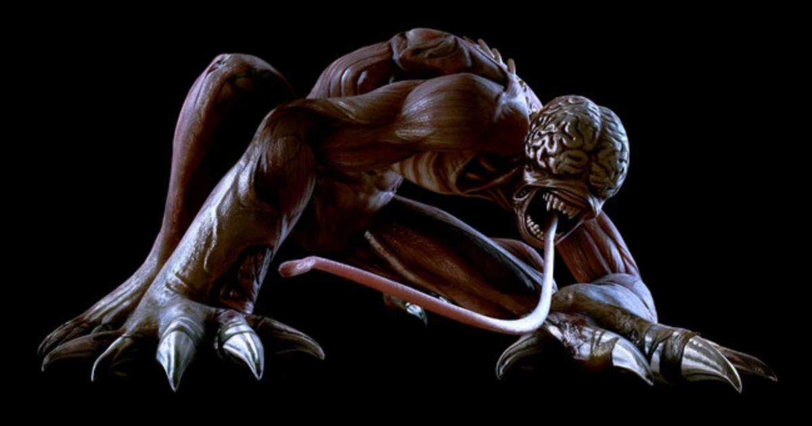
Licker
Classificação: Mutação Avançada por Processo V-ACT
Descrição Técnica: Resultado de uma mutação secundária em zumbis comuns de Raccoon City. Perdem toda a pele e olhos, mas desenvolvem garras afiadas para escalar paredes, audição extremamente aguçada para compensar a cegueira e uma longa língua preênsil capaz de perfurar carne e osso.
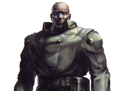
Tyrant (T-103 Model)
Classificação: Arma Bio-Orgânica de Infiltração e Recuperação
Descrição Técnica: Popularmente conhecido como "Mr. X", este Tyrant de produção em massa foi despachado para Raccoon City com o objetivo de recuperar o G-Vírus e eliminar sobreviventes. Veste uma jaqueta blindada projetada para limitar suas mutações e mantê-lo sob controle.
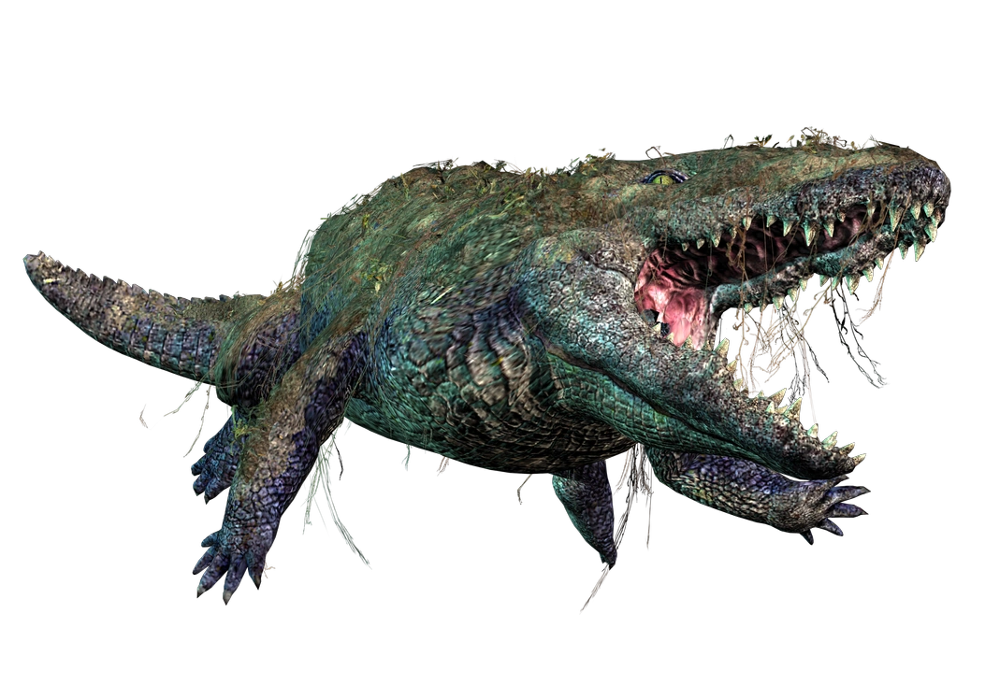
Alligator (Jacaré Gigante)
Classificação: Animal Mutacionado por Contaminação da Água
Descrição Técnica: Um jacaré de estimação que foi descartado nos esgotos de Raccoon City. Ao beber a água contaminada com os dejetos de T-Vírus descartados pelo laboratório NEST, sofreu um crescimento descontrolado, atingindo mais de 10 metros de comprimento.
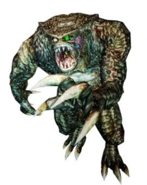
Hunter R
Classificação: Arma Bio-Orgânica de Combate Aprimorada
Descrição Técnica: Uma evolução direta do modelo Hunter $\alpha$. Desenvolvido para ter maior estabilidade genética e um sistema nervoso refinado, tornando-o ligeiramente menor, mas muito mais ágil e focado na perseguição de alvos.
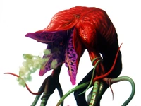
Plant 43 (Ivy)
Classificação: B.O.W. Botânica Móvel
Descrição Técnica: Desenvolvida com base nos dados obtidos da Planta 42 da Mansão Spencer. Diferente de sua predecessora, a Plant 43 é humanoide e possui mobilidade própria. Ela dispara toxinas ácidas e gavinhas que capturam presas para se alimentar de seu sangue.
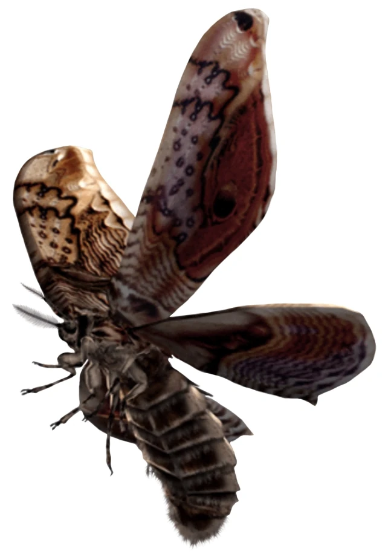
Giant Moth (Mariposa Gigante)
Classificação: Inseto Mutacionado por T-Vírus
Descrição Técnica: Mariposas de laboratório que sofreram aumento drástico de tamanho devido à exposição ao T-Vírus. Fizeram do biotério do laboratório NEST seu ninho e atacam liberando escamas venenosas tóxicas no ar durante o voo.
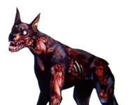
Cão Zumbi (Zombie Dog)
Classificação: Animal Infectado por T-Vírus
Descrição Técnica: Diferente do Cerberus (que foi criado em laboratório), os Zombie Dogs de Raccoon City são cães policiais do R.P.D. infectados acidentalmente pela ingestão de carne ou água contaminadas. Apresentam decomposição acelerada e a mesma agilidade implacável.
Resident Evil 3: Nemesis ▼
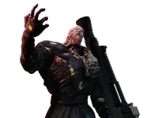
Nemesis
Classificação: Arma Bio-Orgânica de Elite / Hospedeiro do Parasita NE-α
Descrição Técnica: Criado pela divisão europeia da Umbrella ao implantar o parasita inteligente NE-α em um clone Tyrant T-103. Mantém alta capacidade cognitiva, permitindo o uso de lança-foguetes e o cumprimento de ordens complexas, como eliminar os membros sobreviventes dos S.T.A.R.S.
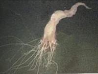
Parasita Nemesis
Classificação: Parasita Sintético Inteligente
Descrição Técnica: Um organismo microscópico desenvolvido artificialmente para assumir o controle do sistema nervoso de um hospedeiro biológico. Ele substitui o cérebro danificado ou primitivo da cobaia, controlando suas mutações de forma focada e concedendo inteligência tática à criatura resultante.
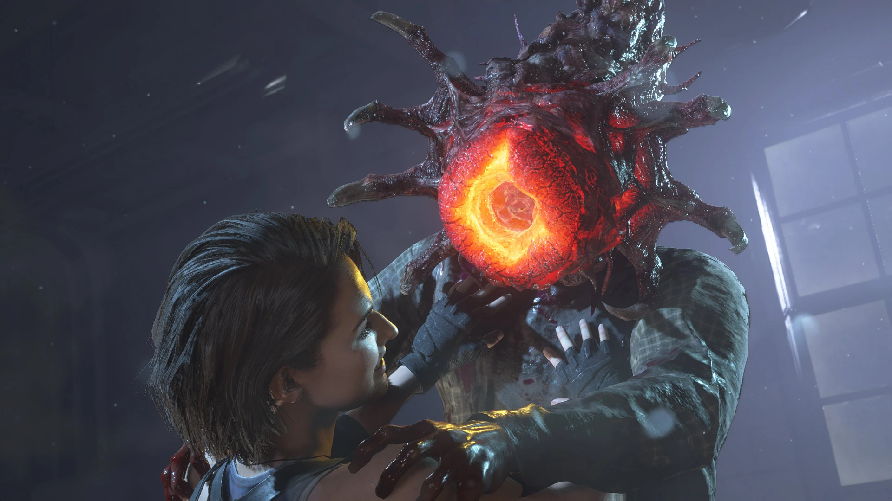
Zumbi Parasita
Classificação: Mutação Induzida por Contágio Direto
Descrição Técnica: Ocorre quando o Nemesis infecta um zumbi comum com um de seus tentáculos parasitários. O parasita NE-α brota diretamente da cabeça do zumbi, assumindo as funções motoras, estendendo tentáculos para ataques de médio alcance e aumentando drasticamente sua resistência a disparos.
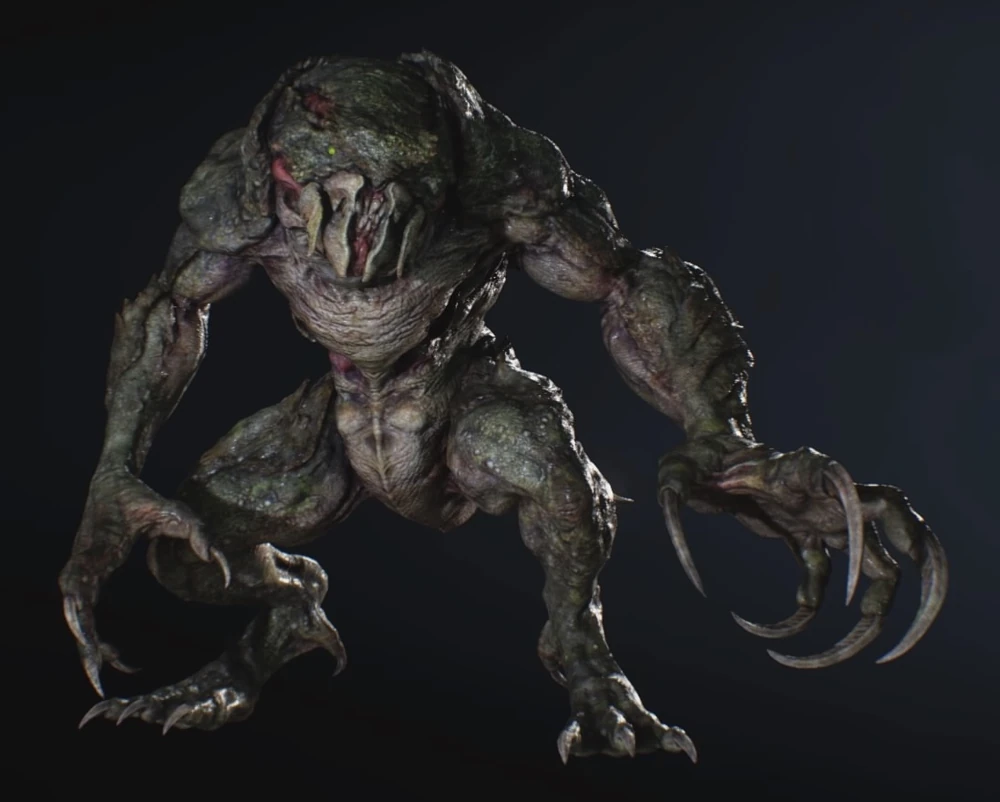
Hunter Beta
Classificação: Arma Bio-Orgânica de Combate / Variante Genética
Descrição Técnica: Uma variante do Hunter Alpha modificada por meio de cruzamentos genéticos adicionais para baratear a produção em massa. Embora possuam um sistema nervoso levemente instável e carapaças tumorais avermelhadas na cabeça, eles compensam com reflexos velozes e a capacidade de esquivar de projéteis.
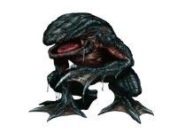
Hunter Gamma
Classificação: Arma Bio-Orgânica Anfíbia
Descrição Técnica: Criado pela combinação de DNA humano com genes de anfíbios usando o T-Vírus. Não possuem olhos e têm extrema sensibilidade ao calor e à luz solar direta, mas sua imensa mandíbula elástica permite engolir presas humanas inteiras de uma só vez em ambientes aquáticos e esgotos.
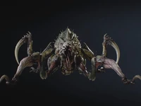
Drain Deimos
Classificação: Artrópode Parasitário Mutacionado
Descrição Técnica: Pulgas que se alimentaram do sangue de animais infectados pelo T-Vírus em Raccoon City. Elas cresceram de forma monstruosa e desenvolveram comportamento predatório, injetando agulhas bucais nos pescoços de suas vítimas para extrair fluido espinhal e nutrientes.
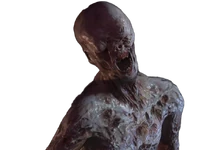
Pale Head
Classificação: Variante Zumbi Mutacionada por T-Vírus
Descrição Técnica: Humanos que sofreram uma mutação metabólica raríssima sob a ação do T-Vírus. Apresentam ausência total de pigmentação na pele (albinismo) e um fator de cura celular bizarramente acelerado, fazendo com que ferimentos comuns de bala se regenerem quase instantaneamente.
Resident Evil Outbreak ▼
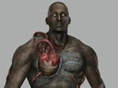
Thanatos
Classificação: Arma Bio-Orgânica Suprema Personalizada
Descrição Técnica: Desenvolvido de forma independente pelo cientista dissidente da Umbrella, Greg Mueller, na Universidade de Raccoon. Esse Tyrant único possui força física e agilidade sem precedentes, além de uma mutação secundária absurdamente agressiva que expande seu braço direito de forma colossal.
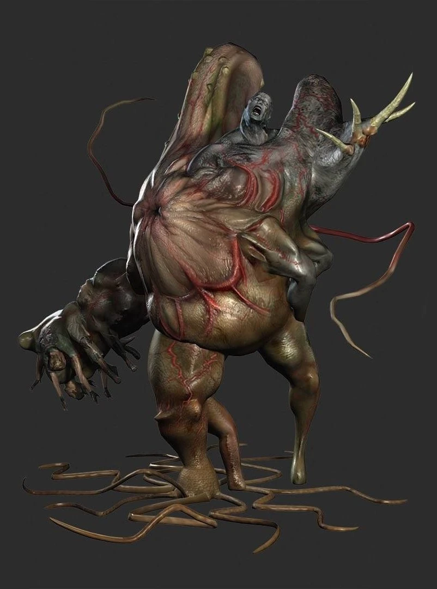
Nyx
Classificação: Arma Bio-Orgânica de Absorção Biológica
Descrição Técnica: Um experimento misterioso e instável mantido em uma cápsula de contenção especial pela Umbrella. A carcaça amorfa do Nyx possui a bizarra capacidade de absorver organicamente corpos de outras criaturas ou humanos ao seu redor para ganhar massa e se fortalecer.
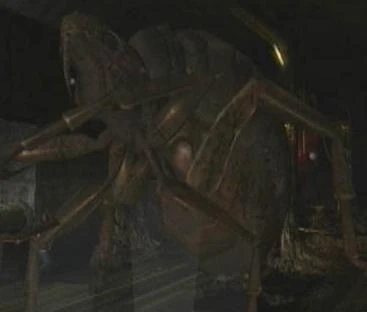
Giga Bite
Classificação: Artrópode Parasitário Mutacionado / Rainha
Descrição Técnica: Uma versão de proporções massivas gerada a partir da infecção de pulgas nos esgotos da cidade. Como uma "rainha" em sua colônia, ela permanece estacionária em seu ninho, sendo defendida ferozmente por dezenas de pulgas menores conhecidas como "Mega Bites".
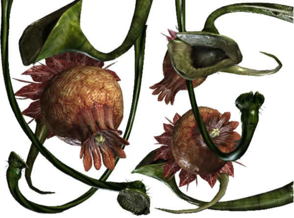
Evil Shade
Classificação: Espécime de Planta Mutante
Descrição Técnica: Uma flor gigante que sofreu mutações drásticas devido ao T-Vírus. Ela reage agressivamente a movimentos bruscos, expelindo esporos de pólen altamente venenosos no ar que corroem a pele e sufocam qualquer ser vivo que se aproxime.
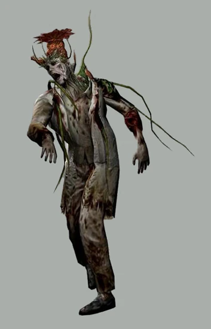
Green Zombie
Classificação: Simbiose Zumbi-Planta
Descrição Técnica: Mutação que afeta corpos de infectados expostos à flora infectada do Jardim Botânico de Raccoon. Plantas parasitárias colonizam o corpo do zumbi, usando o hospedeiro como meio de transporte enquanto liberam toxinas venenosas durante seus ataques físicos.
Resident Evil 4 ▼

Ganado
Classificação: Hospedeiro Humano de Las Plagas
Descrição Técnica: Humanos cujos sistemas nervosos foram completamente dominados pelo parasita ancestral "Las Plagas". Diferente dos zumbis tradicionais, os Ganados retêm intelecto básico, capacidade de comunicação, coordenação tática e habilidade para empunhar ferramentas e armas.
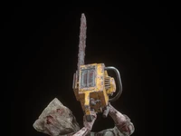
Dr. Salvador
Classificação: Ganado Mutacionado de Alta Resistência
Descrição Técnica: Um habitante do vilarejo que demonstrou uma tolerância física e agressividade absurdamente elevadas à infecção da Plaga. Usando um saco de estopa na cabeça para cobrir suas deformações, ele avança contra invasores empunhando uma motosserra industrial com fúria cega.
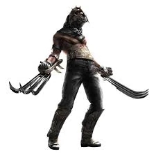
Garrador
Classificação: Humano Mutacionado em Experimento de Combate
Descrição Técnica: Cobaia submetida a experimentos brutais com a Plaga. Devido à sua violência incontrolável, seus olhos foram costurados. Ele caça de forma implacável baseando-se unicamente na audição extrema, desferindo ataques letais com garras metálicas acopladas cirurgicamente aos braços.
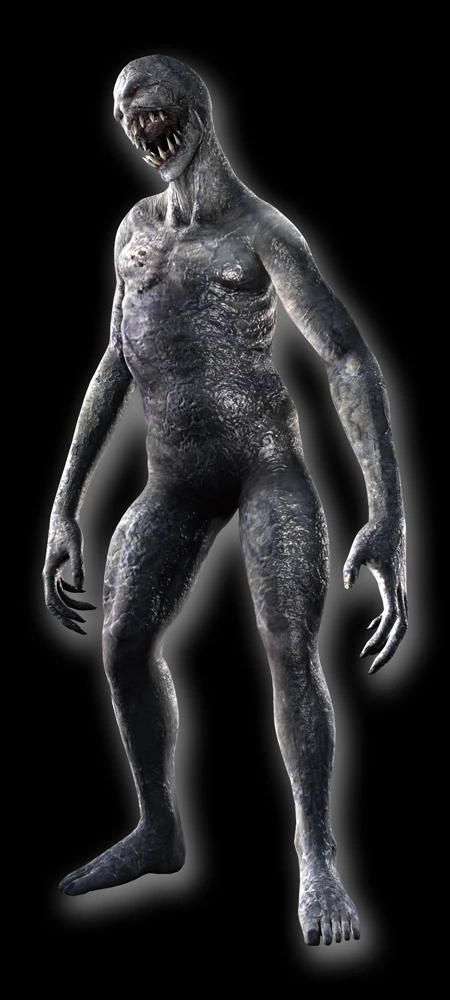
Regenerador
Classificação: Cobaia de Integração de Múltiplas Plagas
Descrição Técnica: Fruto de experimentos onde múltiplos parasitas foram inseridos em um único corpo humano. Possui metabolismo celular ultra-acelerado, sendo capaz de regenerar membros inteiros perdidos em segundos. Para eliminá-lo, é necessário localizar e destruir individualmente os parasitas internos usando mira térmica.
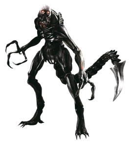
Verdugo
Classificação: Híbrido Genético Humano-Artrópode (B.O.W.)
Descrição Técnica: O carrasco pessoal de Ramon Salazar. Criado ao fundir o DNA de insetos com o genoma humano estabilizado por Las Plagas. O resultado é um predador com carapaça flexível quase imune a disparos convencionais, agilidade extrema e uma cauda pontiaguda mortal.
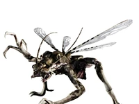
Novistador
Classificação: Inseto Bio-Orgânico Mutacionado
Descrição Técnica: Criaturas insetoides geradas a partir de experimentos genéticos nas masmorras do castelo. Possuem uma habilidade assustadora de camuflagem ativa, mudando a pigmentação do exoesqueleto para ficarem quase invisíveis no ambiente antes de emboscarem suas presas.
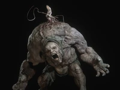
El Gigante
Classificação: Gigantismo Induzido por Las Plagas
Descrição Técnica: Humanos geneticamente modificados que sofreram um crescimento físico colossal após a introdução de uma Plaga altamente alterada. Embora possua força devastadora capaz de destruir estruturas maciças, sua mente é infantil e instável. Quando enfraquecido, o parasita hospedeiro brota de suas costas.
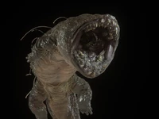
Del Lago
Classificação: Anfíbio Gigante Hospedeiro de Plaga
Descrição Técnica: Uma salamandra que cresceu a proporções monstruosas após ser descartada e exposta ao parasita Las Plagas nas águas da represa da vila. Medindo mais de 20 metros, ela domina o lago local, devorando qualquer corpo ou embarcação que ouse cruzar suas águas.
Resident Evil 5 ▼
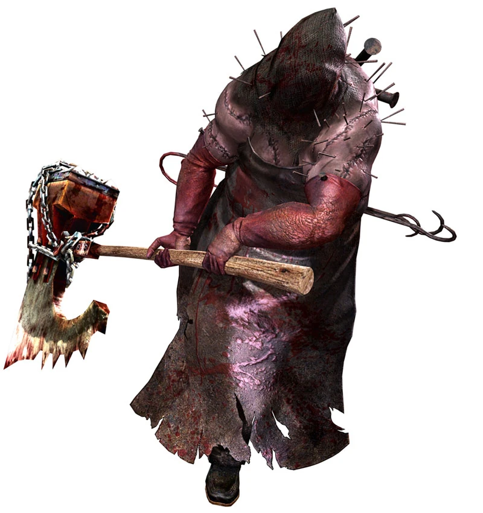
Carrasco Majini
Classificação: Majini de Elite com Força Ampliada
Descrição Técnica: Um hospedeiro humano imenso infectado com a Plaga Tipo 2. Ele exibe uma tolerância física formidável a danos e força muscular ampliada de forma descomunal. Atua como o executor do distrito civil de Kijuju, arrastando um machado gigante coberto de sangue.
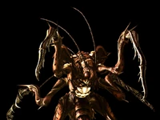
Reaper
Classificação: Artrópode Mutante pelo Vírus Uroboros
Descrição Técnica: Uma barata que entrou em contato acidental com os resíduos do vírus Uroboros nas instalações da Tricell. Sofreu uma mutação horrenda, tornando-se bípede e desenvolvendo uma carapaça ultra-resistente. Ela expele gases químicos que distorcem a visão e ataca com garras frontais capazes de empalar instantaneamente.
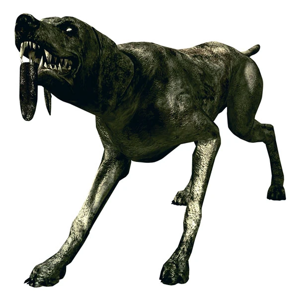
Adjule
Classificação: Canino Infectado por Las Plagas Tipo 2
Descrição Técnica: Cães selvagens e hienas infectados deliberadamente pelo parasita modificado. Quando sofrem danos críticos ou entram em modo de ataque total, a cabeça do animal se divide verticalmente ao meio de forma grotesca, revelando tentáculos e mandíbulas internas do parasita.
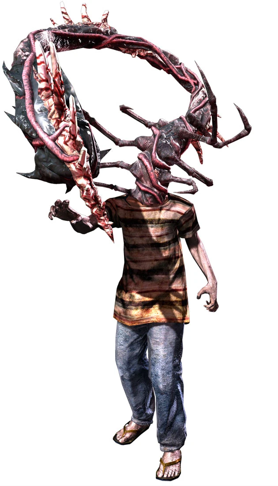
Cephalo
Classificação: Mutação Interna por Las Plagas Tipo 2
Descrição Técnica: Manifestação em que o parasita Las Plagas destrói a cabeça do Majini hospedeiro para emergir diretamente do pescoço. O parasita se projeta como uma longa lâmina carnuda e flexível dotada de espinhos, desferindo golpes chicoteantes altamente destrutivos.
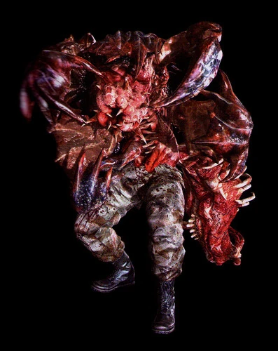
Duvalia
Classificação: Mutação por Las Plagas Tipo 3
Descrição Técnica: Mutação grave provocada pela Plaga Tipo 3 em guerreiros Ndipaya. A parte superior do corpo do hospedeiro é engolida por uma enorme estrutura biológica em formato de concha blindada, que protege o ponto fraco da criatura. Ela ataca tentando esmagar ou engolir o inimigo.
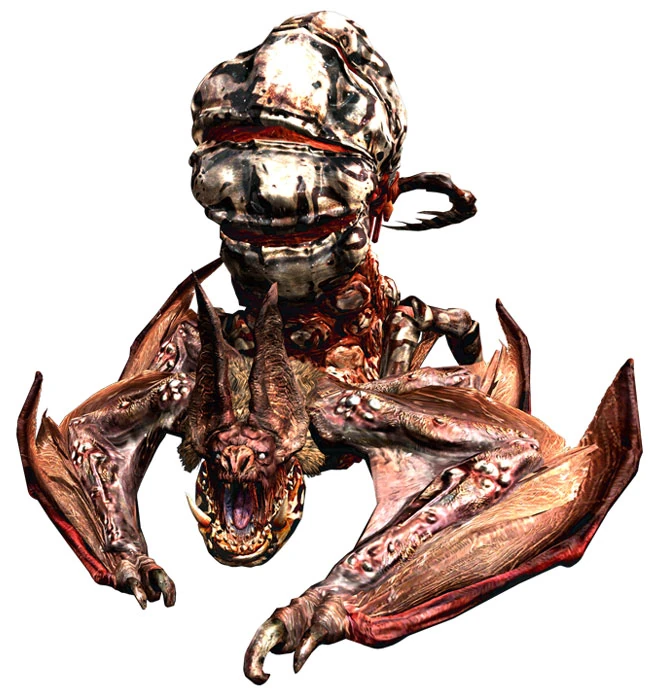
Popokarimu
Classificação: B.O.W. Híbrida de Combate Aéreo
Descrição Técnica: Criatura gigante gerada pela fusão genética de um morcego com um artrópode através do T-Vírus e otimizado com Las Plagas. Possui asas de couro resistentes, a habilidade de disparar teias grudentas pelo abdômen e uma carapaça pesada que protege sua musculatura de ataques frontais.
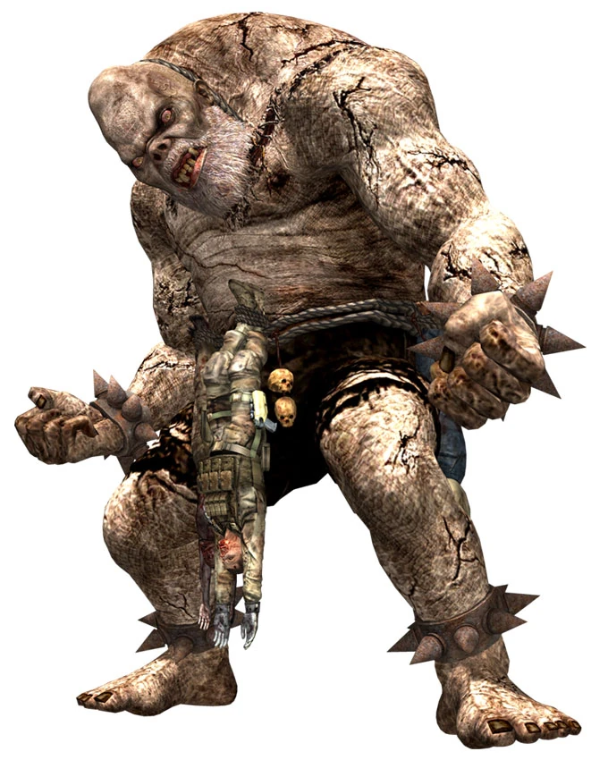
Ndesu
Classificação: B.O.W. de Escala Colossal (Base El Gigante)
Descrição Técnica: Uma versão aperfeiçoada do "El Gigante" desenvolvida pela Tricell na África. Criado usando engenharia genética avançada e controle aprimorado de Las Plagas. Possui maior resistência na pele e múltiplos parasitas menores ancorados sob sua pele que agem como sistemas de suporte de vida.
Resident Evil Revelations 2 ▼
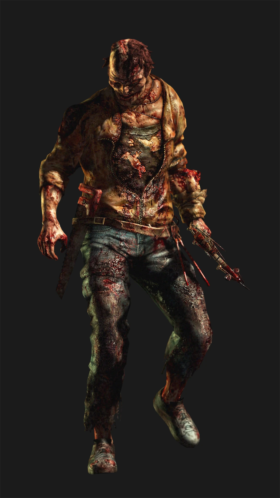
Afflicted
Classificação: Hospedeiro Humano Mutacionado pelo Medo (T-Phobos)
Descrição Técnica: Prisioneiros da ilha submetidos a torturas mentais e físicas extremas. Quando o nível de noradrenalina dispara devido ao pânico, o vírus T-Phobos é ativado no organismo, destruindo a sanidade e transformando-os em psicopatas extremamente ágeis e violentos que atacam com barras de ferro e mordidas.
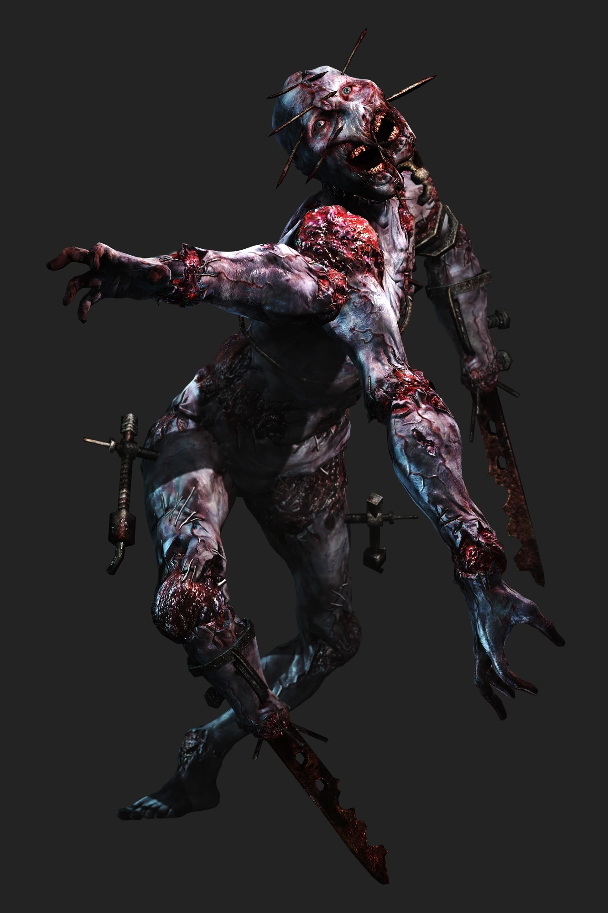
Revenant
Classificação: Amálgama Biomecânico de Tecido Morto e Uroboros
Descrição Técnica: Criaturas grotescas construídas artificialmente ao costurar pedaços de múltiplos cadáveres humanos e peças de metal em torno de um núcleo do vírus Uroboros. Possuem movimentos desengonçados, alta resistência física e um ponto fraco (o núcleo) que fica oculto sob sua carne mutante.
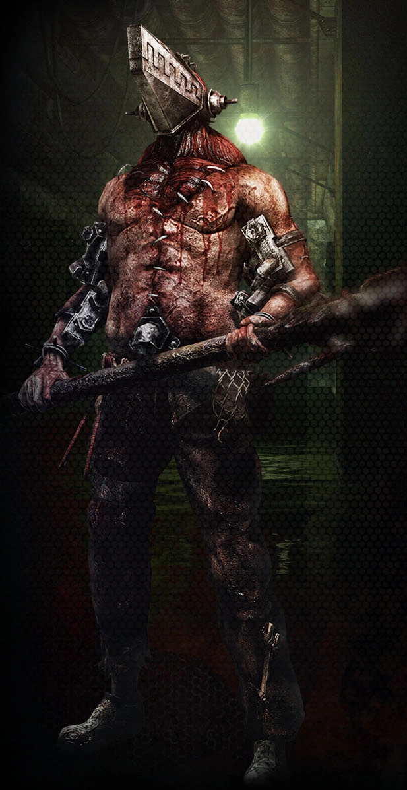
Iron Head
Classificação: Afligido Mutacionado de Grande Porte
Descrição Técnica: Uma variante muito maior e mais robusta dos Afligidos comuns. Eles são equipados com um elmo de ferro pesado para proteger a cabeça e empunham uma marreta gigante de demolição. Apresentam um comportamento lento, mas com uma força física devastadora capaz de subjugar alvos com poucos golpes.
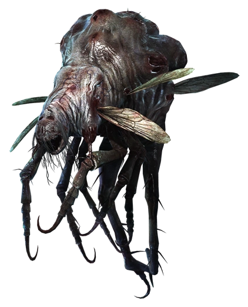
Glasp
Classificação: Inseto Mutado por Infecção Secundária
Descrição Técnica: Um artrópode que sofreu mutação extrema após entrar em contato com o vírus na ilha. Suas asas secretam um gás que distorce a luz, tornando-os completamente invisíveis a olho nu (provocando uma névoa visual ao redor). Seus ataques consistem em emboscar as vítimas pelas costas e quebrar sua coluna vertebral instantaneamente.
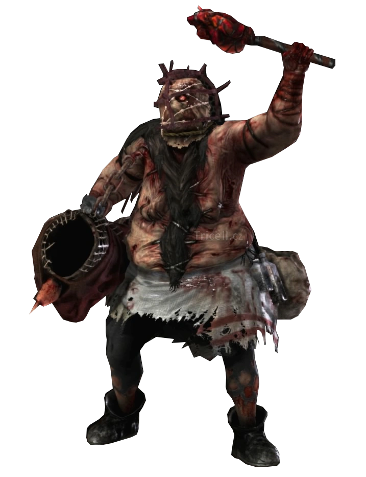
Vulcanblubber
Classificação: Hospedeiro de Elite do Vírus T-Phobos
Descrição Técnica: Um habitante colossal da ilha cujo corpo massivo acumulou tecido adiposo sob o efeito do vírus. Ele usa uma máscara de ferro soldada e carrega uma fornalha improvisada que serve de reservatório para arremessar massas de piche em chamas contra seus oponentes à distância.
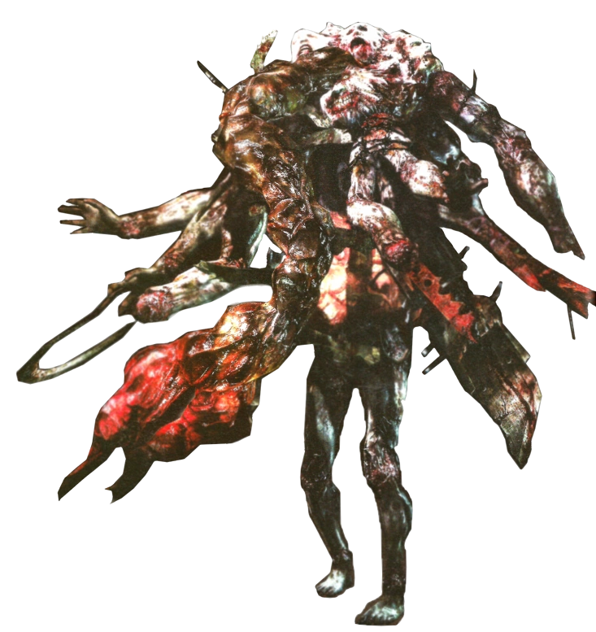
Durga
Classificação: Estágio Evolutivo Avançado do Revenant (Uroboros)
Descrição Técnica: O auge das mutações induzidas pelo Uroboros em corpos costurados. A criatura desenvolve múltiplos braços feitos de filamentos pretos e uma pinça orgânica colossal que ela usa para destruir barreiras e fatiar oponentes. Possui uma carapaça que protege o núcleo vital do vírus.
Resident Evil 6 ▼
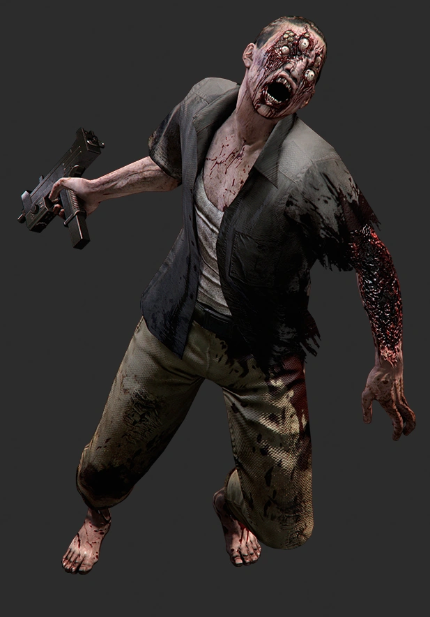
J'avo
Classificação: Hospedeiro Humano Ativo do Vírus C
Descrição Técnica: Infectados que mantêm sua consciência e coordenação militar, sendo capazes de usar armas de fogo. Sua principal característica é a regeneração celular instável: se um membro for danificado, o Vírus C força uma mutação instantânea na área lesionada, transformando braços em foices ou pernas em asas.
Ustanak
Classificação: B.O.W. de Perseguição e Captura de Elite
Descrição Técnica: Criado sob encomenda da Neo-Umbrella para caçar Jake Muller. Esse gigante possui uma determinação implacável e quase nenhuma sensibilidade à dor. Seu braço direito amputado foi substituído por uma prótese mecânica modular intercambiável, capaz de acoplar garras, canhões e brocas.
Lepotica
Classificação: B.O.W. de Dispersão Gasosa
Descrição Técnica: Uma das criações mais grotescas da Neo-Umbrella. Seu corpo é coberto por bulbos amarelados que expelem continuamente um gás azul contendo o Vírus C altamente concentrado. Qualquer humano comum que inalar essa fumaça morre instantaneamente e reanima como um zumbi.
Rasklapanje
Classificação: Organismo Parasitário Multidivisível
Descrição Técnica: Uma criatura humanoide cujo corpo é na verdade uma colônia de sanguessugas e parasitas altamente integrados. Ao sofrer danos severos, ela pode se desmembrar voluntariamente: seus braços, pernas e torso agem de forma independente para flanquear e emboscar o alvo.
Ogroman
Classificação: Arma Bio-Orgânica Gigante
Descrição Técnica: Uma criatura colossal que chega a medir mais de 10 metros de altura. Despachado para zonas de guerra civis para causar destruição em massa. Devido ao seu imenso tamanho e metabolismo instável, possui um dispositivo de suporte de vida acoplado diretamente a um órgão exposto em suas costas.
Gritador (Shrieker)
Classificação: Zumbi Mutante do Vírus C
Descrição Técnica: Um zumbi que desenvolveu uma enorme mutação em seus pulmões e traqueia, visível como um grande saco pulsante vermelho em seu peito. Ao detectar inimigos, ele infla esse órgão e emite um grito ensurdecedor de alta frequência capaz de atordoar soldados e explodir os tímpanos de quem estiver por perto.
Napad
Classificação: Mutação Chrysalid de Blindagem Pesada
Descrição Técnica: Gerado após um J'avo entrar em estado de casulo (Chrysalid). O Napad emerge com um corpo maciço revestido por placas de pele endurecida que agem como armaduras de pedra. Ele ataca como um gorila enfurecido, quebrando sua própria blindagem para expor músculos hipertrofiados.
Strelac
Classificação: Mutação Chrysalid de Longo Alcance
Descrição Técnica: Outra mutação nascida do casulo. O Strelac perde a forma humana e se assemelha a um grande lagarto reptiliano. Ele possui um colar inflável ao redor do pescoço e ataca à distância disparando espinhos afiados feitos de queratina endurecida e infectada.
Resident Evil 7 ▼
Eveline (E-001)
Classificação: Arma Bio-Orgânica Homologada (Série-E)
Descrição Técnica: Um projeto genético projetado para parecer uma criança comum, facilitando a infiltração. Ela é capaz de secretar o fungo Mutamiceto, infectando o sistema nervoso de seres vivos próximos para controlar suas mentes através de alucinações e induzir um desejo obsessivo por "família".
Jack Baker
Classificação: Humano Infectado pelo Mutamiceto (Estágio Avançado)
Descrição Técnica: Sob o controle mental de Eveline, o patriarca da família Baker adquiriu uma capacidade de regeneração celular assustadora. Ele pode sobreviver a empalamentos, decapitações, explosões e atropelamentos, retornando sempre em formas progressivamente mais instáveis e monstruosas.
Marguerite Baker
Classificação: Humano Infectado / Hospedeira de Insetos Mutantes
Descrição Técnica: A infecção pelo mofo permitiu que Marguerite desenvolvesse uma relação simbiótica com insetos geneticamente alterados. Ela possui um ninho biológico implantado diretamente em seu abdômen alongado, do qual pode invocar enxames e desferir ataques com braços esticados e garras.

Molded
Classificação: Organismo Fúngico de Combate (Mutamiceto puro)
Descrição Técnica: Criaturas geradas quando o Mutamiceto consome completamente a matéria orgânica de um cadáver humano. Eles não possuem órgãos internos vitais ou pele, agindo como monstros de pura fibra fúngica preta e dentes afiados que perseguem qualquer alvo não infectado.
Mofado de Gás (Fumer)
Classificação: Variante de Mofado Tóxico e Regenerativo
Descrição Técnica: Espécime encontrado nas minas abandonadas de Dulvey. Essa variante expele constantemente uma densa fumaça corrosiva e tóxica que neutraliza o oxigênio ao seu redor. Possui uma habilidade regenerativa superior, exigindo munição especial antibiótica para ser destruído permanentemente.
Resident Evil Village ▼
Mãe Miranda
Classificação: Hospedeira Original do Megamiceto / Líder Espiritual
Descrição Técnica: Infectada pelo Megamiceto original há mais de um século, Miranda alcançou a imortalidade biológica e a habilidade de manipular sua estrutura celular livremente, permitindo mimetismo e regeneração impecáveis. Ela criou o parasita Cadou na tentativa de ressuscitar sua falecida filha Eva.
Alcina Dimitrescu
Classificação: Humana Mutacionada pelo Cadou (Lorde Dimitrescu)
Descrição Técnica: Devido a uma rara compatibilidade com o Cadou, Alcina não sofreu deformações mentais, mas adquiriu uma altura descomunal de quase 3 metros, garras retráteis e regeneração acelerada. Contudo, devido a uma falha metabólica hereditária, ela precisa consumir carne e sangue humanos constantemente para não sofrer mutações caóticas.
Karl Heisenberg
Classificação: Humano Mutacionado / Engenheiro Biomecânico
Descrição Técnica: O lorde mais poderoso em termos de adaptação ao Cadou. O parasita se integrou ao seu sistema cardiovascular, permitindo que Heisenberg gere e controle campos eletromagnéticos corporais. Com isso, ele consegue levitar e moldar metais ao seu redor, agindo como um imã humano.
Salvatore Moreau
Classificação: Humano Mutacionado com Rejeição Parcial ao Cadou
Descrição Técnica: A baixa compatibilidade de Moreau com o parasita resultou em uma mutação grotesca e instável. Seu corpo desenvolveu brânquias, membranas anfíbias e uma corcova repleta de bolsas de veneno ácido. Sob estresse, ele perde o controle e se transforma em uma imensa besta marinha pisciforme.
Lycan
Classificação: Humano Mutacionado por Rejeição ao Cadou
Descrição Técnica: O resultado mais comum da infecção pelo Cadou na população local. O parasita destrói o córtex frontal, reduzindo os infectados a um estado bestial lupino. Embora ajam como feras sedentas por sangue, eles mantêm a coordenação para usar armas brancas simples e caçar em alcateias organizadas.
Baby
Classificação: Alucinação Biológica Induzida por Pólen de Mutamiceto
Descrição Técnica: Não é uma criatura física real, mas sim uma projeção mental aterrorizante manifestada na mente de Ethan Winters. Donna Beneviento utiliza pólen de flores infectadas com o mofo para induzir alucinações vívidas e paralisantes baseadas nos piores medos e traumas subconscientes de suas vítimas.
Soldat
Classificação: Ciborgue de Combate Reanimado por Cadou
Descrição Técnica: Cadáveres reanimados através do implante de um parasita Cadou que age como bateria biológica no peito. Heisenberg os modificou cirurgicamente com armaduras de metal, brocas industriais e motores a jato, criando um exército implacável de soldados biomecânicos desprovidos de medo.
Vârcolac
Classificação: Mutação Lupina Avançada por Cadou
Descrição Técnica: Criado ao injetar o sangue concentrado de lobos infectados diretamente em cobaias humanas compatíveis. O Vârcolac é um predador quadrúpede colossal, extremamente ágil e forte, dotado de dentes de sabre e pelos espessos capazes de amortecer impactos de projéteis de baixo calibre.
Resident Evil Requiem ▼
T-501
Classificação: Arma Bio-Orgânica de Assalto / Linha Tyrant
Descrição Técnica: Um modelo Tyrant experimental focado em resistência balística extrema e combate de curta distância. Programado para eliminar alvos com precisão tática, o T-501 possui uma fisiologia robusta e pele endurecida para suportar pesado poder de fogo antes de subjugar suas presas.
Titan Spinner
Classificação: Artrópode Mutante de Escala Colossal
Descrição Técnica: Uma aranha gigante que sofreu mutações extremas sob o efeito de agentes virais concentrados. O "Titan Spinner" desenvolveu um exoesqueleto blindado quase impenetrável e glândulas venenosas capazes de disparar teias altamente ácidas e espessas para imobilizar suas vítimas.
Blister Head
Classificação: Variante Zumbi de Alta Instabilidade
Descrição Técnica: Um hospedeiro humano cuja infecção causou um acúmulo severo de fluidos biológicos corrosivos e gasosos na região craniana. Ao ser baleado ou se aproximar do alvo, a pressão interna faz com que as bolhas em sua cabeça explodam, espalhando uma névoa ácida letal.
Blister Borne
Classificação: Mutação Avançada por Pústulas Orgânicas
Descrição Técnica: Um estágio evolutivo ainda mais perigoso da mutação "Blister". Neste espécime, o mofo ou vírus tomou conta de todo o torso e membros superiores do hospedeiro, cobrindo-o com enormes pústulas pulsantes e dolorosas que liberam toxinas ao menor sinal de impacto.
Licker Beta 2
Classificação: Mutação Avançada V-ACT / Linhagem Refinada
Descrição Técnica: Uma linhagem ainda mais mortal do clássico predador de cérebro exposto. O Licker β2 apresenta garras mais afiadas, maior agilidade para escalar superfícies verticais e uma musculatura exposta extremamente densa, tornando seus saltos e botes quase impossíveis de esquivar.
Garmr
Classificação: Arma Bio-Orgânica Canina de Combate
Descrição Técnica: Caninos de guarda de grande porte submetidos a experimentos controlados do T-Vírus. Diferente dos cães zumbis comuns que apenas apodrecem, os espécimes "Garmr" mantêm reflexos afiados, musculatura rígida e são usados como forças de vanguarda rápidas para subjugar intrusos.
Plant 43 (Requiem)
Classificação: Flora Mutante Móvel e Predatória
Descrição Técnica: Uma variação adaptada da famosa "Ivy" de Raccoon City. Essa planta carnívora humanoide utiliza cipós reforçados como chicotes para golpear inimigos à distância e possui bulbos modificados que expelem esporos digestivos capazes de derreter barreiras e roupas de proteção.